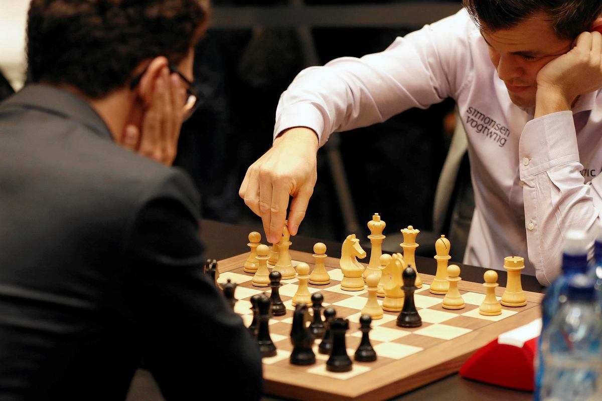

Szachy sport dla nielicznych
Czym są Szachy?
Strategiczna gra planszowa, rozgrywana przez dwóch graczy. Rozgrywa się ją na planszy nazywanej szachownicą, gdzie rozstawia się 32 bierki (sześciu rodzajów, w tym po 8 pionów i 8 figur, łącznie 16 dla każdego z graczy). Celem gry jest danie mata, tzn. zagrożenie króla przeciwnika usunięciem z dalszej rozgrywki ("zbiciem"), którego nie sposób uniknąć. Jest to jedna z najstarszych gier planszowych. Jako, że istnieje olbrzymia możliwość tworzenia scenariuszy i strategii, okrzyknięto ją "grą królewską". Najwcześniejsze ślady potwierdzające istnienie szachów (w postaci zbliżonej do obecnej), pochodzą z Indii z połowy VI wieku, choć uważa się, że wymyślone zostały znacznie wcześniej. Według źródeł pisanych, gra ta była już znana w Persji na dworze szacha Chusrau I Anoszarwana w latach 70-tych VI wieku naszej ery, gdzie przywieziona została w darze od indyjskiego radży - już wtedy były jasno określone zasady gry.

Korzyści wynikające z gry w szachy
- Gra w szachy w młodym wieku rozwija umiejętności matematyczne i krytyczne myślenie
- Szachy mogą zmniejszyć Twój mózg – ale to dobrze
- Najlepsi szachiści używają obu półkul mózgu podczas gry
- Szachy uczą myślenia wzorcowego
- Szachy uczą myślenia „jak komputer”
- Doświadczeni szachiści dobrze radzą sobie z problemami
- Gra w szachy pomaga zapobiegać chorobie Alzheimera
Jak stać się dobrym szachistą?
- Zdefiniuj co oznacza "być dobrym w szachach". Dla wielu ludzi, bycie "dobrym" oznacza, że potrafią pokonać przeciętnego szachistę. Jeśli jest to Twoja definicja, to wtedy osiągnięcie rankingu 1200-1400 w zupełności wystarczy. Na tym poziomie, pokonasz ludzi, którzy tylko pobieżnie wiedzą jak grać. Dla innych, bycie "dobrym" oznacza wygrywanie przeciwko innym graczom, którzy grają od kilku lat. Może to oznaczać osiągnięcie rankingu 1600+.
- Rób wiele zadań taktycznych.Jedna z najlepszych rzeczy, którą możesz robić, aby stać się dobrym w szachach, jest poprawianie Twojej wizji szachownicy
- Zawsze przeglądaj swoje partie, używając komputerowej analizy. Bardzo ciężko jest stać się dobrym jeśli tylko grasz w szachy bez oglądania swoich partii. Droga do mistrzostwa wymaga żebyś używał swoich partii jako narzędzia treningowego, aby zobaczyć gdzie zagrałeś dobrze, a gdzie źle.
- Stwórz plan nauki. Zawsze poprawiasz swoje szanse na wygraną, jeśli masz plan i się go trzymasz
- Bądź cierpliwy. Stawanie się lepszym w szachach nie dzieje się nagle. Szachy są głęboką grą, która wymaga wielu lat nauki i gry.
